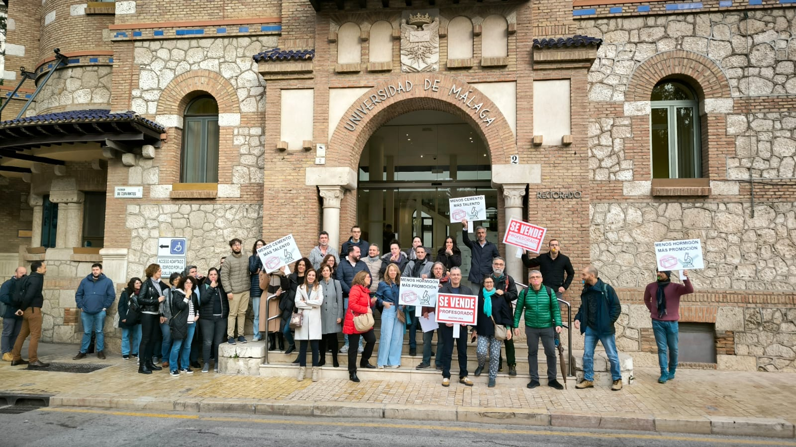

COLECTIVO DE PROFESORADO ACREDITADO A CATEDRÁTICOS DE LA UMA

Somos un colectivo de profesorado titular acreditado a Catedrático/a de Universidad (CU) en la Universidad de Málaga (UMA). Nos sentimos particularmente perjudicados, ya que llevamos desde febrero de 2024 sin que se convoquen plazas equivalentes a nuestras acreditaciones. A pesar de nuestro compromiso con la institución y los méritos que justificaron nuestras acreditaciones, enfrentamos una paralización total de nuestras posibilidades de promoción, lo que nos convierte en el colectivo más afectado por estas medidas.
Desde el colectivo ACUMA, formado por profesoras y profesores de la Universidad de Málaga acreditados por la ANECA para el cuerpo de catedráticos y catedráticas de universidad, denunciamos públicamente la paralización injustificada de los procesos de promoción del Personal Docente e Investigador (PDI) en nuestra institución.
A pesar de que el actual equipo rectoral se comprometió en su programa electoral, durante las elecciones celebradas en diciembre de 2023, a mantener una política activa de promoción, lo cierto es que, desde principios de 2024, no se ha convocado ninguna plaza para el profesorado acreditado a catedrático ese mismo año. Esta paralización afecta de forma directa a casi un centenar de docentes, que tras años de trabajo y evaluación externa, han alcanzado la acreditación conforme a los criterios oficiales, pero siguen bloqueados en su desarrollo profesional.
Esta situación vulnera principios básicos de justicia, mérito y equidad, y supone un agravio comparativo respecto a otras universidades andaluzas que sí están avanzando en sus procesos de promoción. Además, el bloqueo daña gravemente la planificación docente e investigadora de los departamentos, contribuye a la desmotivación del profesorado y favorece la fuga de talento.
Por todo ello, desde ACUMA exigimos:
El programa electoral del rector, disponible aquí (página 18), incluye los siguientes compromisos relacionados con la promoción del PDI:
"Elaboraremos un plan integral de acceso, estabilización y promoción del PDI a medio y largo plazo que favorezca su crecimiento profesional y el apego a la institución, teniendo en cuenta las necesidades de personal de los centros y el relevo generacional. La estabilización del profesorado es clave en la universidad pública."
"Mantendremos la política de promoción de plazas del PDI acreditado a profesor/a titular de universidad y catedrático/a de universidad."
La Universidad de Málaga no puede permitirse ignorar a su propio talento. Defender la universidad pública pasa necesariamente por reconocer, estabilizar y promover a quienes la sostienen día a día con su docencia, investigación y compromiso.
Por la dignidad del PDI. Por una universidad pública justa, coherente y responsable.



📬 Email: colectivoacuma@gmail.com
🐦 Twitter/X: @colectivoacuma
📸 Instagram: @acuma_colectivo
{kind=link}